Huom. Voit kopioida kaavan leikepöydälle klikkaamalla sitä.
Obs. Du kan kopiera formeln genom att klicka på den.
Funktiot
Funktioner
Funktio joukosta \(X\) joukkoon \(Y\) liittää joukon \(X\) jokaiseen alkioon täsmälleen yhden alkion joukosta \(Y\). Joukko \(X\) on funktion määrittelyjoukko eli lähtöjoukko ja joukko \(Y\) on funktion maalijoukko.
En funktion från mängden \(X\) till mängden \(Y\) associerar till varje element i mängden \(X\) exakt ett element i mängden \(Y\). Mängden \(X\) är funktionens definitionsmängd och mängden \(Y\) är funktionens värdemängd.
Funktion \(f\) nollakohta tarkoittaa sellaista muuttujan \(x\) arvoa, jolla funktio saa arvon nolla eli \(f(x)=0\).
Med ett nollställe till funktionen \(f\) avses ett sådant värde på variabeln \(x\), för vilket funktionen får värdet noll, dvs. \(f(x)=0\).
Funktiota \(f\), joka on muotoa \(f(x)=a\), missä \(a\) on reaaliluku, kutsutaan vakiofunktioksi.
En funktion \(f\) i formen \(f(x)=a\), där \(a\) är ett reellt tal är en konstantfunktion.
Funktiota \(f\), joka on muotoa \(f(x)=ax+b\), missä \(a \ne 0\), kutsutaan ensimmäisen asteen polynomifunktioksi.
En funktion \(f\) i formen \(f(x)=ax+b\), där \(a \ne 0\), är en polynomfunktion av första graden.
Olkoon \(n\) positiivinen luonnollinen luku. Funktiota \(f\), joka on muotoa \(f(x)=a_nx^n + a_{n_1}x^{n-1} + \ldots + a_1 x + a_0\) ja \(a_n\ne 0\), kutsutaan \(n\):nnen asteen polynomifunktioksi.
Låt \(n\) vara ett positivt naturligt tal. En funktion \(f\) i formen \(f(x)=a_nx^n + a_{n_1}x^{n-1} + \ldots + a_1 x + a_0\) där \(a_n\ne 0\), är en polynomfunktion av \(n\):e graden.
Yhtälöt
Ekvationer
Yhtälön ratkaisu tai juuri tarkoittaa lukua, joka muuttujan paikalle sijoitettuna tekee yhtälön vasemmasta ja oikeasta puolesta yhtä suuria.
Ekvationens lösning eller rot är ett tal, som när det placeras i stället för variabeln leder till att vänstra och högra ledet av ekvationen är lika stora.
Ensimmäisen asteen yhtälö tarkoittaa yhtälöä, joka voidaan esittää muodossa
\[ax+b=0,\]
missä \(a\ne 0\).
En ekvation av första graden är en ekvation, som kan anges i formen
\[ax+b=0,\]
där \(a\ne 0\).
Olkoon \(n\) positiivinen luonnollinen luku.
Yhtälöä \(a_nx^n+a_{n_1}x^{n-1}+ \ldots + a_1 + x a_0 = 0\), missä
\(a\ne 0\), kutsutaan \(n\):nnen asteen yhtälöksi.
Låt \(n\) vara ett positivt naturligt tal. Ekvationen
\(a_nx^n+a_{n_1}x^{n-1}+ \ldots + a_1 + x a_0 = 0\), där \(a\ne 0\),
är en ekvation av \(n\):e graden.
Toisen asteen yhtälön ratkaiseminen
Lösning av andragradsekvationer
Toisen asteen yhtälön \(ax^2 + bx + c = 0\)
ratkaisut saadaan kaavalla
Lösningarna till en andragradsekvation \(ax^2 +
bx + c = 0\) fås med formeln
\[x = \frac{-b \pm \sqrt{b^2-4ac}}{2a}.\]
Ratkaisukaavassa neliöjuurimerkin alle tulevaa
lukua \(b^2-4ac\), kutsutaan diskriminantiksi ja merkitään
\(D\).
Talet \(b^2-4ac\) i formeln kallas diskriminant och betecknas \(D\).
Jos \(D > 0\), on yhtälöllä kaksi ratkaisua.
Om \(D > 0\), har ekvationen två lösningar.
Jos \(D = 0\), on yhtälöllä yksi ratkaisu.
Om \(D = 0\), har ekvationen en lösning.
Jos \(D < 0\), ei yhtälöllä ole reaalisia ratkaisuja.
Om \(D < 0\), har ekvationen inga reella rötter.
Itseisarvo
Absolutbelopp
Luvun \(a\) itseisarvolle pätee
För absolutbeloppet av talet \(a\) gäller
- \(\left|a\right|=\begin{cases}
a&\mathrm{{,}\ jos}\ a\ge0.\\
-a&\mathrm{{,}\ jos}\ a<0.
\end{cases}\)
- \(\left|a\right|=\begin{cases}
a&\mathrm{{,}\ om}\ a\ge0.\\
-a&\mathrm{{,}\ om}\ a<0.
\end{cases}\)
- \(|a|=|b|\), jos ja vain jos \(a=b\) tai \(a= -b\).
- \(|a|=|b|\), om och endast om \(a=b\) eller \(a= -b\).
- Lukujen \(a\) ja \(b\) välinen etäisyys lukusuoralla on \(|a -b|\).
- Avståndet mellan talen \(a\) och \(b\) på tallinjen är \(|a -b|\).
- Tulon itseisarvo on yhtä suuri kuin itseisarvojen tulo
- Produktens absolutbelopp är lika stort som produkten av absolutbeloppen
\[\left|ab\right| = \left|a\right|\left|b\right|.\]
- Osamäärän itseisarvo on yhtä suuri kuin itseisarvojen osamäärä
- Kvotens absolutbelopp är lika stort som kvoten av absolutbeloppen
\[\left|\frac{a}{b}\right| = \frac{\left|a\right|}{\left|b\right|}\]
- Kolmioepäyhtälö
- Triangelolikheten
\[\left|\left|a\right|-\left|b\right|\right| \leq \left|a+b\right| \leq \left|a\right|+\left|b\right|.\]
Potenssi
Potens
Oletetaan, että \(a \neq 0\) ja \(n\) ovat positiivisia luonnollisia lukuja. Potenssit \(a^0\) ja \(a^{-n}\) määritellään seuraavasti:
Låt \(a \neq 0\) och \(n\) vara ett positivt naturligt tal. Potenserna \(a^0\) och \(a^{-n}\) definieras på följande sätt:
\[a^0 = 1\]
\[a^{-n} = \frac{1}{a^n}\]
Oletetaan, että \(a>0\) sekä että \(m\) ja \(n\) ovat positiivisia luonnollisia lukuja. Tällöin
Anta att \(a>0\) och att \(m\) och \(n\) är positiva naturliga tal. Då gäller
\[a^\frac{m}{n} = \sqrt[n]{a^m}=(\sqrt[n]{a})^m \]
Potenssien laskusääntöjä
Räkneregler med potenser
- Samankantaisten potenssien tulo: \(a^ma^n=a^{m+n}\).
- Produkten av potenser med samma bas: \(a^ma^n=a^{m+n}\).
- Samankantaisten potenssien osamäärä: \(\frac {a^m}{a^n}=a^{m-n}\), missä \(a\neq 0\).
- Kvoten av potenser med samma bas: \(\frac{a^m}{a^n}=a^{m-n}\), där \(a\neq 0\).
- Tulon potenssi: \((ab)^n=a^nb^n\).
- Potens av en produkt: \((ab)^n=a^nb^n\).
- Osamäärän potenssi:
\(\left( \frac{a}{b} \right)^n= \frac{a^n}{b^n}\), missä \(b\neq0\).
- Potens av en kvot:
\(\left( \frac{a}{b} \right)^n= \frac{a^n}{b^n}\), där \(b\neq0\).
- Potenssin potenssi: \((a^m)^n=a^{mn}=(a^n)^m\).
- Dubbelpotens: \((a^m)^n=a^{mn}=(a^n)^m\).
- Binomin neliöt:
Kvadraten av ett binom:
\((a+b)^2=a^2+2ab+b^2\)
\((a-b)^2=a^2-2ab+b^2\).
- Trinomin neliö:
Kvadraten av ett trinom: \((a+b+c)^2=a^2+b^2+c^2+2ab+2ac+2bc\).
- Potenssien erotus:
Differens av potenser:
\( a^2-b^2=(a-b)(a+b) \)
\( a^3-b^3=(a-b)(a^2+ab+b^2) \)
\( a^n-b^n = (a-b)(a^{n-1}+a^{n-2}b+ \cdots + ab^{n-2}+b^{n-1}) \).
- Potenssien yhteenlasku:
\(a^n+b^n = (a+b)(a^{n-1}-a^{n-2}b+\cdots-ab^{n-2}+b^{n-1})\), missä \(n\) on pariton.
- Addition av potenser:
\(a^n+b^n = (a+b)(a^{n-1}-a^{n-2}b+\cdots-ab^{n-2}+b^{n-1})\), där \(n\) är udda.
- Newtonin binomikaava:
Newtons binomialformel: \((a+b)^n=\sum_{k=o}^n \binom{n}{k}a^{n-k}b^k=\sum_{k=0}^n\frac{n!}{k!(n-k)}a^{n-k}b^k\).
Neliöjuuri
Kvadratrot
Luvun \(a\geq 0\) neliöjuuri tarkoittaa lukua \(b\geq 0\), jolle pätee \(b^2=a.\) Luvun \(a\) neliöjuurelle käytetään merkintää \(\sqrt{a}\).
Kvadratroten av talet \(a\geq 0\) är talet \(b\geq 0\), för vilket gäller \(b^2=a.\) Vi betecknar kadratroten av talet \(a\) med \(\sqrt{a}\).
Neliöjuuren laskusääntöjä
Räkneregler med kvadratrot
- Kertolasku:
Multiplikation:
\(\sqrt a \cdot \sqrt b = \sqrt {ab}\).
- Jakolasku:
Division:
\( \frac{\sqrt a}{\sqrt b} = \sqrt {\frac ab}\).
- Suhde itseisarvoon:
Samband med absolutbelopp:
\(\sqrt{a^2} = \left| a \right|\).
Logaritmi
Logaritmer
Oletetaan, että kantaluku \(k\) on positiivinen ja \(k\ne1\). Positiivisen luvun \(a\) \(k\)-kantainen logaritmi tarkoittaa lukua \(x\), jolla on ominaisuus \(k^x=a\). Luvusta \(x\) käytetään merkintää \(\log_k(a)\).
Anta att basen \(k\) är positiv och att \(k\ne1\). Då är \(k\)-logaritmen för ett positivt tal \(a\) talet \(x\), för vilken det gäller att \(k^x=a\). Vi betecknar \(x\) med \(\log_k(a)\).
Logaritmin laskusääntöjä
Räkneregler med logaritmer
- \(\log xy = \log x + \log y\)
- \(\log \frac{x}{y} = \log x -\log y\)
- \(\log x^r = r \log x\)
- \(\log_a x = \frac{\log_b x}{\log_b a}\)
- \(\log_a 1=0\)
- \(\log_a a=1\)
- \(\log_a a^x=x\)
- \(a^{\log_a x}=x\)
Algoritmeja yhtälöiden ratkaisuun
Algoritmer för lösning av ekvationer
Oletetaan, että \(f\) on derivoituva funktio, joka on määritelty välillä \([a, b]\) ja sen arvojoukko koostuu reaaliluvuista. Newtonin menetelmällä nollakohta löydetään seuraavasti. Oletetaan, että tiedossa oleva likiarvo on \(x_n\). Siitä saadaan parempi likiarvo \(x_{n+1}\) alla seuraavan kaavan mukaisesti:
Anta att \(f\) är en deriverbar funktion, som är definierad i intervallet \([a, b]\) och vars värdemängd består av reella tal. Med hjälp av Newtons mentod får man nollställena som följande. Anta att man känner till en approximation \(x_n\). En bättre approximation \(x_{n+1}\) fås med följande formel:
\[x_{n+1}=x_n-\frac{f(x_n)}{f'(x_n)}x_{n+1}.\]
Sekanttimenetelmä on määritelty rekursiokaavalla
Sekantmetoden definieras med rekursionsformeln
\[x_{n+1}=x_{n}-\frac{x_{n}-x_{n-1}}{f(x_{n})-f(x_{n-1})}f(x_{n}).\]
Ympyrä
Cirkel
Tason pisteet, jotka ovat vakioetäisyydellä kiinteästä pisteestä, muodostavat ympyrän. Kiinteä piste on ympyrän keskipiste ja vakioetäisyys sen säde.
De punkter i ett plan, som har ett konstant avstånd till en given punkt, bildar en cirkel. Den givna punkten är cirkelns medelpunkt och det konstanta avståndet cirkelns radie.
Jänne on ympyrän kahden pisteen välinen jana. Halkaisija on ympyrän keskipisteen kautta kulkeva jänne.
En korda är en sträcka mellan två punkter på cirkeln. Diametern är den korda som går genom cirkelns medelpunkt.
Luku \(\pi\) on ympyrän kehän pituuden \(p\) suhde halkaisijan pituuteen \(d\):
Talet \(\pi\) är förhållandet mellan cirkelns omkrets \(p\) och längden på diametern \(d\):
\[\pi = \frac{p}{d}\]
Ympyrän pinta-ala \(A\) ja kehän pituus \(p\) riippuvat ympyrän säteestä \(r\) seuraavasti:
Cirkelns area \(A\) och omkrets \(p\) beror på cirkelns radie \(r\) enligt följande:
\[A = \pi r^2\]
\[p = 2\pi r\]
Kulma, jonka kärki on ympyrän keskipisteessä, on keskuskulma:
Den vinkel, vars spets ligger i cirkelns medelpunkt, kallas medelpunktsvinkel:

Keskuskulman kyljet rajaavat ympyrän kehältä kaaren ja ympyrän sisältä sektorin.
Medelpunktsvinkelns vinkelben begränsar en båge på cirkeln och inom cirkeln en sektor.
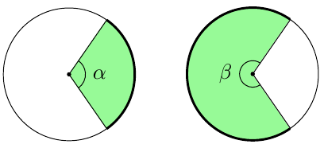
Kaari ja sen päätepisteitä yhdistävä jänne rajaavat ympyrän sisältä segmentin.
Inom cirkeln begränsar en båge och kordan genom bågens ändpunkter ett segment.
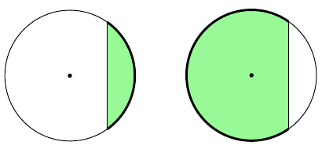
Kaaren pituus \(b\) ja sektorin pinta-ala \(A_S\) riippuvat keskuskulmasta \(\alpha\) ja ympyrän säteestä \(r\) seuraavasti:
Bågens längd \(b\) och arean av sektorn \(A_S\) beror på medelpunktsvinkeln \(\alpha\) och cirkelns radie \(r\) enligt följande:
\[b = \frac{\alpha}{360°} \cdot 2\pi r\]
\[A_S = \frac{\alpha}{360°} \cdot \pi r^2\]
Suorakulmio
Rektangel
Suorakulmion pinta-ala \(A\) on samasta kärjestä alkavien sivujen pituuksien tulo, eli alla olevan kuvion merkinnöillä
Rektangelns area \(A\) är produkten av längderna på de sidor som utgår från samma hörn, dvs. med beteckningarna i figuren nedan
\[A=ab\]

Kolmio
Triangel
Kolmion pinta-ala \(A\) on \(A=\frac{ah}{2}\), missä \(a\) on kolmion kannan pituus ja \(h\) on korkeus.
Triangelns area \(A\) är \(A=\frac{ah}{2}\), där \(a\) är längden på triangelns bas och \(h\) är triangelns höjd.

Kolmion kulmien summa on 180°.
Summan av vinklarna i en triangel är 180°.
Pythagoraan lause: Suorakulmaisen kolmion kateettien \(a\), ja \(b\) neliöiden summa on yhtä suuri kuin hypotenuusan \(c\) neliö:
Pythagoras sats: I en rätvinklig triangel är summan av kvadraten på kateterna \(a\) och \(b\) lika stor som kvadraten på hypotenusan \(c\):
\[a^2+b^2=c^2\]
Suorakulmaisessa kolmiossa terävän kulman \(\alpha\) sini, kosini ja tangetti tarkoittavat kolmion sivujen pituuksien suhteita.
I en rätvinklig triangel betyder sinus, kosinus och tangens av en spetsig vinkel \(\alpha\) förhållandet mellan längderna av triangelns sidor.
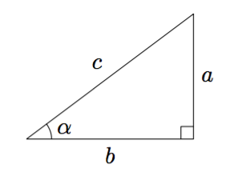
Yllä olevan kuvion merkinnöillä
Med figurens beteckningar gäller att
\[\sin \alpha = \dfrac{a}{c}\]
\[\cos \alpha = \dfrac{b}{c}\]
\[\tan \alpha = \dfrac{a}{b}\]
Oletetaan, että \(0° \leq \alpha \leq 360°\). Jos piirretään origosta lähtevä jana, joka muodostaa positiivisen \(x\)-akselin kanssa kulman \(\alpha\) ja jonka pituus on 1, niin
Anta att \(0° \leq \alpha \leq 360°\). Om man ritar en sträcka från origo, vars längd är 1 och som bildar en vinkel \(\alpha\) med den positiva \(x\)-axeln, så
- kulman \(\alpha\) kosini on tämän janan toisen päätepisteen \(x\)-koordinaatti.
- är cosinus för vinkeln \(\alpha\) \(x\)-koordinaten för sträckans andra ändpunkt.
- kulman \(\alpha\) sini on tämän janan toisen päätepisteen \(y\)-koordinaatti.
- är sinus för vinkeln \(\alpha\) \(y\)-koordinaten för sträckans andra ändpunkt.

Sinilause: Alla olevan kuvan merkinnöillä
Sinussatsen: Med beteckningarna i figuren nedan gäller
\[\frac{a}{\sin \alpha} = \frac{b}{\sin \beta} = \frac{c}{\sin \gamma}\]
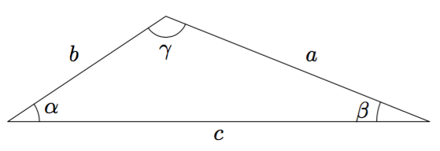
Pallo
Sfär
Avaruuden pisteet, jotka ovat vakioetäisyydellä kiinteästä pisteestä, muodostavat pallon. Kiinteä piste on pallon keskipiste ja vakioetäisyys sen säde.
De punkter i rymden som ligger på ett konstant avtånd till en given punkt bildar en sfär. Den givna punkten är sfärens medelpunkt och det konstanta avståndet sfärens radie.
Pallon tilavuus \(V\) ja pinta-ala \(A\) riippuvat pallon säteestä \(r\) seuraavasti:
Sfärens volym \(V\) och area \(A\) beror på sfärens radie \(r\) enligt följande:
\[V = \frac{4\pi r^3}{3}\]
\[A = 4\pi r^2\]
Jos taso leikkaa pallon sisältä kappaleen, kutsutaan sitä pallosegmentiksi, ja erottaa pallon pinnasta kalotin. Pallosegmentin tilavuus \(V_S\) ja kalotin pinta-ala \(A_K\) riippuvat pallosegmentin korkeudesta \(h\) ja pallon säteestä \(r\) seuraavasti:
Om ett plan avskiljer ett stycke i sfären (klotet) kallas detta ett sfäriskt segment eller klotsegment. Samtidigt avgränsar planet en kalott på sfärens yta. Det sfäriska segmentets volym \(V_S\) och kalottens area \(A_K\) beror på höjden \(h\) av det sfäriska segmentet och sfärens radie \(r\) enligt följande:
\[V_S = \pi h^2 \left(r-\dfrac{h}{3}\right)\]
\[A_K = 2\pi rh\]
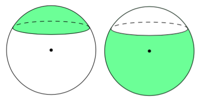
Lieriöt
Cylindrar
Ympyrälieriön pohja on ympyrä. Särmiö eli prisma on lieriö, jonka pohja on monikulmio.
Basytorna i en cirkulär cylinder är cirklar. Ett prisma är en cylinder, vars basytor är polygoner.

Suora lieriö tarkoittaa lieriötä, jonka vaippa on kohtisuorassa pohjaa vastaan.
För en rak cylinder gäller, att dess mantelyta ligger vinkelrätt mot basytorna.
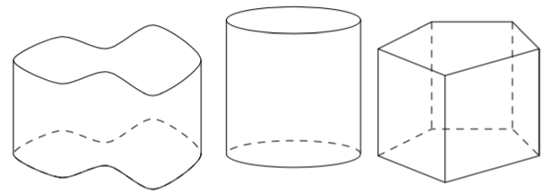
Lieriön tilavuus \(V\) on lieriön pohjan pinta-alan \(A_p\) ja lieriön korkeuden \(h\) tulo:
Cylinderns volym \(V\) är produkten av basytans area \(A_p\) och cylinderns höjd \(h\):
\[V = A_p \cdot h\]

Suoran lieriön vaipan pinta-ala \(A_v\) on pohjan piirin \(p\) ja lieriön korkeuden \(h\) tulo:
Mantelytans area \(A_v\) för en rak cylinder är produkten av basens omkrets \(p\) och cylinderns höjd \(h\):
\[A_v = ph,\]
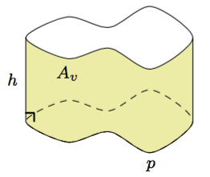
Kartiot
Koner
Ympyräkartion pohja on ympyrä. Pyramidi on kartio, jonka pohja on monikulmio.
Basytan i en cirkulär kon begränsas av en cirkel. Pyramiden är en kon, vars bas är en polygon.
Suoran kartion huipusta piirretty korkeusjanan toinen päätepiste on pohjan keskipisteessä.
För en rät kon gäller att ena ändpunkten för höjden som dras från konens topp ligger i basytans medelpunkt eller mittpunkt.
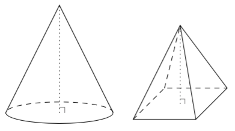
Kartion tilavuus \(V\) on kolmasosa kartion pohjan pinta-alan \(A_p\) ja kartion korkeuden \(h\) tulosta:
Konens volym \(V\) är en tredjedel av produkten av basytans area \(A_p\) och konens höjd \(h\):
\[V = \frac{A_p \cdot h}{3}\]
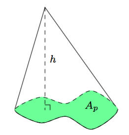
Suoran ympyräkartion vaipan pinta-ala \(A_v\) on
\[A_v = \pi rs,\]
missä \(r\) on kartion pohjaympyrän säde ja \(s\) on etäisyys pohjan reunasta kartion huippuun.
Mantelytans area \(A_v\) för en rät cirkulär kon är
\[A_v = \pi rs,\]
där \(r\) är radien på konens cirkulära basyta och \(s\) avståndet från basytans kant till konens spets.

Katkaistu kartio muodostuu kartiosta, jonka huippu on leikattu pois pohjan suuntaisella tasolla.
En stympad kon bildas av en kon, vars topp har skurits bort med ett plan som är parallellt med basytan.
Katkaistun kartion tilavuus \(V\) on alla olevan kuvan merkinnöin:
Volymen \(V\) av en stympad kon är med beteckningarna i figuren nedan:
\[V = \frac{h}{3}\left(A_1+A_2+ \sqrt{A_1A_2}\right)\]
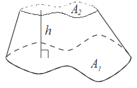
Radiaani
Radian
Kulman suuruus radiaaneina on kulmaa vastaavan ympyrän kaaren pituuden suhde ympyrän säteeseen:
En vinkels storlek i radianer är förhållandet mellan bågens längd och radiens längd.
\[\alpha=\frac{b}{r}\]
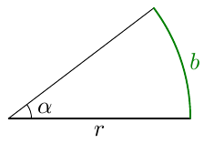
Oikokulma \(180°\) on \(\pi\) radiaania.
Den raka vinkeln \(180°\) är \(\pi\) radianer.
Yksikköympyrä ja kulman kehäpiste
Enhetscirkeln och vinkelns periferipunkt
Ympyrää, jonka keskipiste on origo ja säde 1, sanotaan yksikköympyräksi. Jos kulma \(\alpha\) sijoitetaan koordinaatistoon niin, että sen kärki on origossa ja toinen kylki positiivisella \(x\)-akselilla, kulman \(\alpha\) kehäpiste on kulman toisen kyljen ja yksikköympyrän leikkauspiste \(A\).
En cirkel, som har medelpunkten i origo och radien 1, kallas enhetscirkel. Om vinkeln \(\alpha\) placeras i koordinatsystemet så, att dess spets är i origo och det ena vinkelbenet på den positiva \(x\)-axeln, är periferipunkten till vinkeln \(\alpha\) skärningspunkten mellan det andra vinkelbenet och enhetscirkeln \(A\).
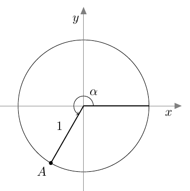
Suunnattu kulma
Riktad vinkel
Suunnattu kulma ilmaisee kierron suunnan ja suuruuden. Kierto vastapäivään on positiivinen:
Den riktade vinkeln uttrycker vridningens riktning och storlek. En vridning moturs är positiv:
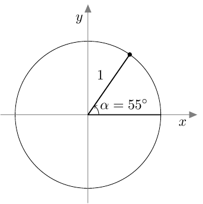
Kierto myötäpäivään on negatiivinen:
En vridning medurs är negativ:
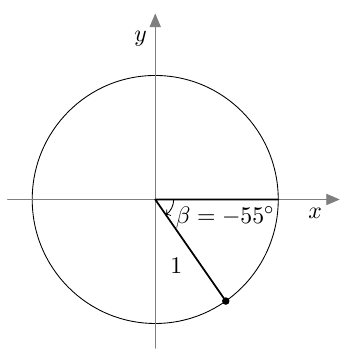
Suunnatun kulman sini, kosini ja tangentti
Den riktade vinkelns sinus, cosinus och tangens
Kulman \(\alpha\) sini on kulman \(\alpha\) kehäpisteen \(y\)-koordinaatti:
Sinus för vinkeln \(\alpha\) är \(y\)-koordinaten för periferipunkten till vinkeln \(\alpha\):
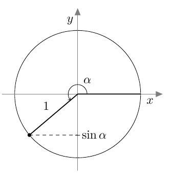
Kulman sinin arvo on aina lukujen -1 ja 1 välissä, ts. kaikilla kulmilla \(\alpha\) pätee
Värdet av sinus för vinkeln är mellan -1 och 1, dvs. för alla vinklar \(\alpha\) gäller
\[-1 \le\sin\alpha\le 1.\]
Kulman sini on positiivinen, jos kulman kehäpiste on koordinaatiston I tai II neljänneksessä. Muussa tapauksessa kulman sini on negatiivinen.
Sinus för vinkeln är positiv, om vinkelns periferipunkt ligger i koodinatsystemets I eller II kvadrant. I övriga fall är sinus för vinkeln negativ.
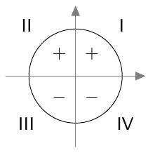
Kulman \(\alpha\) kosini on kulman \(\alpha\) kehäpisteen \(x\)-koordinaatti:
Cosinus för vinkeln \(\alpha\) är \(x\)-koordinaten för periferipunkten till vinkeln \(\alpha\):

Kulman kosinin arvo on aina lukujen -1 ja 1 välissä, ts. kaikilla kulmilla \(\alpha\) pätee
Värdet av cosinus för vinkeln är mellan -1 och 1, dvs. för alla vinklar \(\alpha\) gäller
\[ -1\le\cos\alpha\le 1.\]
Kulman kosini on positiivinen, jos kulman kehäpiste on koordinaatiston I tai IV neljänneksessä. Muussa tapauksessa kulman kosini on negatiivinen.
Cosinus för vinkeln är positiv, om vinkelns periferipunkt ligger i koordinatsystemets I eller IV kvadrant. I övriga fall är cosinus för vinkeln negativ.
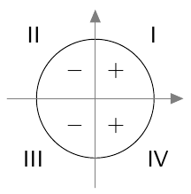
Oletetaan, että kulman \(\alpha\) kehäpiste ei ole \(y\)-akselilla eli \(\alpha \neq 90^° + n \cdot 180^°\) kaikilla kokonaisluvuilla \(n\). Kulman \(\alpha\) tangentti on kulman \(\alpha\) tangenttipisteen \(y\)-koordinaatti.
Anta att periferipunkten för vinkeln \(\alpha\) inte ligger på \(y\)-axeln, dvs. \(\alpha \neq 90^° + n \cdot 180^°\) för alla hela tal \(n\). Tangens för vinkeln \(\alpha\) är \(y\)-koordinaten för tangentpunkten till vinkeln \(\alpha\).
Piirretään yksikköympyrälle tangentti pisteeseen (1,0). Tämän tangenttisuoran ja suunnatun kulman \(\alpha\) kyljen mukaisesti kulkevan suoran leikkauspiste on kulman \(\alpha\) tangenttipiste.
Vi ritar en tangent till enhetscirkeln i punkten (1,0). Skärningspunkten mellan tangenten och vinkeln \(\alpha\):s vänstra vinkelben eller dess förlängning är tangentpunkt till vinkeln \(\alpha\).
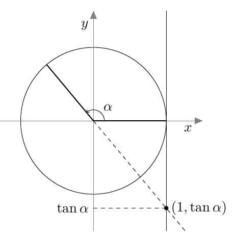
Kulman tangentti voi olla mikä tahansa reaaliluku. Kulman tangentti on positiivinen, jos kulman kehäpiste on koordinaatiston I tai III neljänneksessä. Muussa tapauksessa kulman tangentti on negatiivinen.
Tangens för en vinkel kan vara vilket reellt tal som helst. Tangens för vinkeln är positiv, om vinkelns periferipunkt ligger i koordinatsystemets I eller III kvadrant. I övriga fall är tangens för vinkeln negativ.
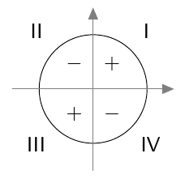
Sini-, kosini- ja tangenttifunktion ominaisuuksia
Egenskaper för sinus-, kosinus- och tangensfunktioner
Sini- ja kosini funktioiden arvojoukko on suljettu väli \(\left[ -1,1\right]\).
Värdemängden för både sinus- och cosinusfunktionen är det slutna intervallet\(\left[ -1,1\right]\).
Tangenttifunktio on määritelty, jos ja vain jos
Tangensfunktionen är definierad, om och endast om
\[x\neq \frac{\pi}{2}+n\pi,\]
missä \(n\) on kokonaisluku. Tangenttifunktion arvojoukko on koko lukusuora \(\mathbb{R}\).
där \(n\) är ett helt tal. Värdemängden för tangensfunktionen är \(\mathbb{R}\).
Sini-, kosini- ja tangenttifunktiot ovat jaksollisia funktioita. Sinin ja kosinin jakso on \(2\pi\) eli kaikilla muuttujan \(x\) arvoilla pätee
Sinus, cosinus och tangens är periodiska funktioner. Perioden för sinus och cosinus är \(2\pi\), dvs. för alla värden på variabeln \(x\) gäller
\[\sin (x+2\pi)=\sin x\]
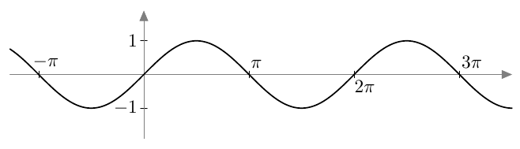
\[\cos (x+2\pi)=\cos x\]
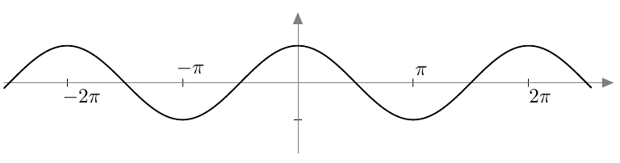
Tangenttifunktion jakso on \(\pi\) eli määrittelyjoukossa kaikilla muuttujan \(x\) arvoilla pätee
Tangensfunktionens period är \(\pi\), dvs. för alla värden på variabeln \(x\) i definitionsmängden gäller
\[\tan (x+\pi)=\tan x\]
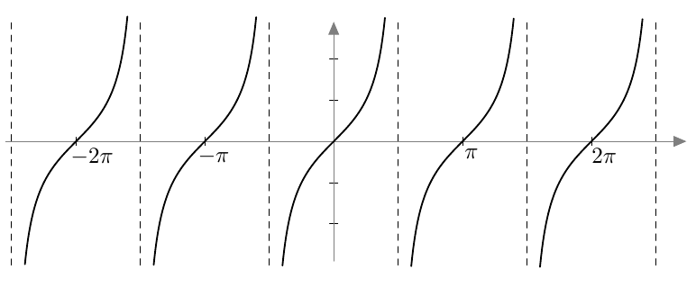
Trigonometrisia kaavoja
Trigonometriska formler
Jokaisen kulman sinin ja kosinin neliöiden summa on 1:
Summan av kvadraterna på en vinkels cosinus och sinus är 1:
\[\sin^2\alpha+\cos^2\alpha =1.\]
- Kulman \(\alpha\) tangentti on sinin ja kosinin osamäärä:
Tangens för vinkeln \(\alpha\) är kvoten av sinus och cosinus:
\[\tan\alpha=\frac{\sin\alpha}{\cos\alpha}.\]
- Kulmien \(\alpha + \beta\) ja \(\alpha - \beta\) sini, kosini ja tangentti saadaan laskettua seuraavasti:
Sinus, cosinus och tangens för vinklarna \(\alpha + \beta\) och \(\alpha - \beta\) beräknas engligt följande:
\[\sin(\alpha + \beta)=\sin\alpha\cos\beta+\cos\alpha\sin\beta\]
\[\sin(\alpha - \beta)=\sin\alpha\cos\beta-\cos\alpha\sin\beta\]
\[\cos(\alpha + \beta)=\cos\alpha\cos\beta-\sin\alpha\sin\beta\]
\[\cos(\alpha - \beta)=\cos\alpha\cos\beta+\sin\alpha\sin\beta\]
\[\tan(\alpha + \beta)=\frac{\tan\alpha+\tan\beta}{1-\tan\alpha\tan\beta}\]
\[\tan(\alpha - \beta)=\frac{\tan\alpha-\tan\beta}{1+\tan\alpha\tan\beta}\]
- Kulman \(2x\) sini, kosini ja tangentti saadaan laskettua kulman \(x\) sinin, kosinin ja tangentin avulla:
Sinus, cosinus och tangens för vinkeln \(2x\) kan beräknas med hjälp av sinus, cosinus och tangens för vinkeln \(x\):
\[\sin2x=2\sin x\cos x\]
\[\cos2x=\cos^2x-\sin^2x\]
\[\tan2x=\frac{2\tan x}{1-\tan^2x}.\]
- Kaikilla kulmilla \(x\) ja luonnollisilla luvuilla \(n\) pätee
För alla vinklar \(x\) och hela tal \(n\) gäller
\[\sin x = - \sin (-x) = \cos \left( x - \frac{\pi}{2} \right) = \sin \left( \pi - x \right) = \sin \left( x + n2\pi \right)\]
\[\cos x = \cos (-x) = \sin \left( x + \frac{\pi}{2} \right) = - \cos \left( \pi - x \right) = \cos \left( x + n2\pi \right)\]
\[\tan x = - \tan (-x) = - \tan \left( \pi - x \right) = \tan \left( x + n\pi \right).\]
Paikkavektori
Ortsvektor
Vektori, joka lähtee origosta ja joka loppuu pisteeseen \(P\), on pisteen \(P\) paikkavektori. Pisteen \(P\) paikkavektoria voidaan merkitä \(\overline{\mathrm{OP}}\).
En vektor, som har startpunkten i origo och slutpunkten \(P\), är ortsvektor för punkten \(P\). Ortsvektorn för punkten \(P\) kan betecknas \(\overline{\mathrm{OP}}\).
Vektorien laskutoimituksia kantavektoreiden avulla
Räkneoperationer med hjälp av basvektorer
Tason vektorien summa:
Summan av vektorer i planet:
\((x_1\overline{\mathrm{i}}+y_1\overline{\mathrm{j}})+(x_2\overline{\mathrm{i}}+y_2\overline{\mathrm{j}})=(x_1+x_2)\overline{\mathrm{i}}+(y_1+y_2)\overline{\mathrm{j}}\)
ja avaruuden vektorien summa:
och summan av vektorer i rymden:
\((x_1\overline{\mathrm{i}}+y_1\overline{\mathrm{j}}+z_1\overline{\mathrm{k}})+(x_2\overline{\mathrm{i}}+y_2\overline{\mathrm{j}}+z_2\overline{\mathrm{k}})=(x_1+x_2)\overline{\mathrm{i}}+(y_1+y_2)\overline{\mathrm{j}}+(z_1+z_2)\overline{\mathrm{k}}\).
Tason vektorin
För en vektor i planet
\(\overline{\mathrm{v}}=x_1\overline{\mathrm{i}}+y_1\overline{\mathrm{j}}\)
skalaarimonikerta:
ger multiplikation med ett tal \(r\):
\(r\overline{\mathrm{v}}=rx_1\overline{\mathrm{i}}+ry_1\overline{\mathrm{j}}\)
ja avaruuden vektorin
och för en vektor i rymden
\(\overline{\mathrm{v}}=x_1\overline{\mathrm{i}}+y_1\overline{\mathrm{j}}+z_1\overline{\mathrm{k}}\)
skalaarimonikerta:
ger multiplikation med ett tal \(r\):
\(r\overline{\mathrm{v}}=rx_1\overline{\mathrm{i}}+ry_1\overline{\mathrm{j}}+rz_1\overline{\mathrm{k}}\).
Vektori \(-1\overline{\mathrm{v}}\) on vektorin \(\overline{\mathrm{v}}\) vastavektori. Sitä merkitään \(-\overline{\mathrm{v}}\).
Vektorn \(-1\overline{\mathrm{v}}\) är den motsatta vektorn till vektorn \(\overline{\mathrm{v}}\). Den betecknas \(-\overline{\mathrm{v}}\).
Vektoreiden \(\overline{\mathrm{v}}\) ja \(\overline{\mathrm{w}}\) erotus \(\overline{\mathrm{v}}-\overline{\mathrm{w}}\) saadaan lisäämällä vektoriin \(\overline{\mathrm{v}}\) vastavektori \(-1\overline{\mathrm{w}}\).
Differensen \(\overline{\mathrm{v}}-\overline{\mathrm{w}}\) av vektorerna \(\overline{\mathrm{v}}\) och \(\overline{\mathrm{w}}\) får vi genom att addera motsatta vektorn \(-1\overline{\mathrm{w}}\) till vektorn \(\overline{\mathrm{v}}\).
Vektoreiden yhdensuuntaisuus
Parallella vektorer
Vektorit \(\overline{\mathrm{v}}\) ja \(\overline{\mathrm{w}}\) ovat yhdensuuntaiset eli \(\overline{\mathrm{v}} \parallel \overline{\mathrm{w}}\), jos ja vain jos \(\overline{\mathrm{v}}= r \overline{\mathrm{w}}\) jollakin reaaliluvulla \(r \neq 0\).
Vektorerna \(\overline{\mathrm{v}}\) och \(\overline{\mathrm{w}}\) är parallella, dvs. \(\overline{\mathrm{v}} \parallel \overline{\mathrm{w}}\), om och endast om \(\overline{\mathrm{v}}= r \overline{\mathrm{w}}\) för något reellt tal \(r \neq 0\).
Vektoreiden pituus
Längden av vektorer
Vektorin \(\overline{\mathrm{v}} = x \overline{\mathrm{i}} + y \overline{\mathrm{j}}\) pituus on
Längden av vektorn \(\overline{\mathrm{v}} = x \overline{\mathrm{i}} + y \overline{\mathrm{j}}\) är
\[|\overline{\mathrm{v}}|=\sqrt{x^2+y^2}.\]
Vektorin \(\overline{\mathrm{v}} = x \overline{\mathrm{i}} + y \overline{\mathrm{j}} + z \overline{\mathrm{k}}\) pituus on
Längden av vektorn \(\overline{\mathrm{v}} = x \overline{\mathrm{i}} + y \overline{\mathrm{j}} + z \overline{\mathrm{k}}\) är
\[|\overline{\mathrm{v}}|=\sqrt{x^2+y^2+z^2}.\]
Kaikilla vektoreilla \(\overline{\mathrm{v}}\) ja reaaliluvuilla \(t\) pätee, että
För alla vektorer \(\overline{\mathrm{v}}\) och reella tal \(t\) gäller, att
\[|t\overline{\mathrm{v}}|=|t|\cdot |\overline{\mathrm{v}}|.\]
Yksikkövektori
Enhetsvektor
Vektoria, jonka pituus on 1, sanotaan yksikkövektoriksi.
En vektor som har längden 1 kallas enhetsvektor.
Vektorin \(\overline{\mathrm{v}} \neq \overline{0}\) suuntainen yksikkövektori \(\overline{\mathrm{v}}^0\) on
Enhetsvektorn \(\overline{\mathrm{v}}^0\) som är parallell med vektorn \(\overline{\mathrm{v}} \neq \overline{0}\) är
\[\frac{1}{|\overline{\mathrm{v}}|}\overline{\mathrm{v}}.\]
Vektorin komponentit
Vektorns komponenter
Oletetaan, että \(\overline{\mathrm{v}}\) ja \(\overline{\mathrm{w}}\) ovat kaksi vektoria, joista kumpikaan ei ole nollavektori. Oletetaan lisäksi, että vektorit \(\overline{\mathrm{v}}\) ja \(\overline{\mathrm{w}}\) eivät ole yhdensuuntaiset.
Jos vektori \(\overline{\mathrm{a}}\) voidaan kirjoittaa muodossa
\[ \overline{\mathrm{a}} = s\overline{\mathrm{v}} + t\overline{\mathrm{w}} \]
missä \(s\) ja \(t\) ovat reaalilukuja, niin sanotaan, että \(s\overline{\mathrm{v}}\) ja \(t\overline{\mathrm{w}}\) ovat vektorin \(\overline{\mathrm{a}}\) vektoreiden \(\overline{\mathrm{v}}\) ja \(\overline{\mathrm{w}}\) suuntaiset komponentit.
Anta att \(\overline{\mathrm{v}}\) och \(\overline{\mathrm{w}}\) är två vektorer, som inte är nollvektorn. Anta dessutom att vektorerna \(\overline{\mathrm{v}}\) och \(\overline{\mathrm{w}}\) inte är parallella.
Om vektorn \(\overline{\mathrm{a}}\) kan uttryckas i formen
\[ \overline{\mathrm{a}} = s\overline{\mathrm{v}} + t\overline{\mathrm{w}} \]
där \(s\) och \(t\) är reella tal, så säger vi att \(s\overline{\mathrm{v}}\) och \(t\overline{\mathrm{w}}\) är komponenter för vektorn \(\overline{\mathrm{a}}\), och att de är parallella med vektorerna \(\overline{\mathrm{v}}\) och \(\overline{\mathrm{w}}\).
Pistetulo
Skalär produkt
Vektoreiden \(\overline{\mathrm{v}} = x_1 \overline{\mathrm{i}} + y_1 \overline{\mathrm{j}}\) ja \(\overline{\mathrm{w}} = x_2 \overline{\mathrm{i}} + y_2 \overline{\mathrm{j}}\) pistetulo on
Den skalära produkten av vektorerna \(\overline{\mathrm{v}} = x_1 \overline{\mathrm{i}} + y_1 \overline{\mathrm{j}}\) och \(\overline{\mathrm{w}} = x_2 \overline{\mathrm{i}} + y_2 \overline{\mathrm{j}}\) är
\[\overline{\mathrm{v}} \cdot \overline{\mathrm{w}} = x_1x_2+y_1y_2.\]
VektoreidenDen skalära produkten av vektorerna
\(\overline{\mathrm{v}} = x_1
\overline{\mathrm{i}} + y_1 \overline{\mathrm{j}} + z_1
\overline{\mathrm{k}}\) jaoch \(\overline{\mathrm{w}} = x_2
\overline{\mathrm{i}} + y_2 \overline{\mathrm{j}} + z_2
\overline{\mathrm{k}}\) pistetulo on är
\[\overline{\mathrm{v}} \cdot \overline{\mathrm{w}} = x_1x_2+y_1y_2+z_1z_2.\]
Olkoot \(\overline{\mathrm{a}}\), \(\overline{\mathrm{b}}\) ja \(\overline{\mathrm{c}}\) vektoreita ja \(t\) reaaliluku. Pistetulolla on seuraavat ominaisuudet:
Låt \(\overline{\mathrm{a}}\), \(\overline{\mathrm{b}}\) och \(\overline{\mathrm{c}}\) vara vektorer och \(t\) ett reellt tal. Skalära produkten har följande egeneskaper:
- Vaihdannaisuus:Kommutativitet:
\(\overline{\mathrm{a}} \cdot \overline{\mathrm{b}} = \overline{\mathrm{b}} \cdot \overline{\mathrm{a}}\)
- Osittelulaki:Distributivitet:
\(\overline{\mathrm{a}} \cdot (\overline{\mathrm{b}} + \overline{\mathrm{c}}) =(\overline{\mathrm{a}} \cdot \overline{\mathrm{b}}) + (\overline{\mathrm{a}} \cdot \overline{\mathrm{c}})\)
- Skalaarin siirto:Multiplikation med ett tal:
\(t\left(\overline{\mathrm{a}} \cdot \overline{\mathrm{b}}\right) = \left(t\overline{\mathrm{a}}\right) \cdot \overline{\mathrm{b}} = \overline{\mathrm{a}} \cdot \left(t\overline{\mathrm{b}}\right)\)
Vektorin pistetulo itsensä kanssa on yhtä suuri kuin vektorin pituuden neliö. Toisin sanottuna
Skalära produkten av en vektor med sig själv är lika stor som kvadraten på vektorns längd. Med andra ord
\[\overline{\mathrm{v}} \cdot \overline{\mathrm{v}} = \left|\overline{\mathrm{v}}\right|^2.\]
Vektoreiden \(\overline{\mathrm{v}}\) ja \(\overline{\mathrm{w}}\) pistetulolle pätee
För skalära produkten av vektorerna \(\overline{\mathrm{v}}\) och \(\overline{\mathrm{w}}\) gäller
\[\overline{\mathrm{v}} \cdot \overline{\mathrm{w}} = \left|\overline{\mathrm{v}}||\overline{\mathrm{w}}\right|\cos \left(\overline{\mathrm{v}}, \overline{\mathrm{w}}\right).\]
Oletetaan, että \(\overline{\mathrm{v}} \neq 0\) ja \(\overline{\mathrm{w}} \neq 0\). Vektorit \(\overline{\mathrm{v}}\) ja \(\overline{\mathrm{w}}\) ovat toisiaan vastaan kohtisuorassa, jos ja vain jos \(\overline{\mathrm{v}} \cdot \overline{\mathrm{w}}=0\)
Anta att \(\overline{\mathrm{v}} \neq 0\) och \(\overline{\mathrm{w}} \neq 0\). Vektorerna \(\overline{\mathrm{v}}\) och \(\overline{\mathrm{w}}\) är vinkelräta mot varandra, om och endast om \(\overline{\mathrm{v}} \cdot \overline{\mathrm{w}}=0\)
Suoran esityksiä
Framställningsformer för en linje
Oletetaan, että \(A\) on suoran \(L\) piste ja \(\overline{\mathrm{v}}\) on suoran \(L\) suuntavektori. Yhtälö
Anta att \(A\) är en punkt på linjen \(L\) och att vektorn \(\overline{\mathrm{v}}\) är en riktningsvektor för linjen \(L\). Ekvationen
\[\overline{\mathrm{OP}} = \overline{\mathrm{OA}} + t\overline{\mathrm{v}}\]
on suoran \(L\) vektorimuotoinen parametriesitys.
är parameterframställningen i vektorform för linjen \(L\).
Tässä esiintyvä kerroin \(t\) on parametri ja vektori \(\overline{\mathrm{OP}}\) on paikkavektori liikkuvalle pisteelle \(P\) suoralla.
Koefficienten \(t\) är parametern och vektorn \(\overline{\mathrm{OP}}\) är ortsvektorn för en rörlig punkt \(P\) på linjen.
Oletetaan, että \(L\) on \(xy\)-tason suora ja \(\overline{\mathrm{n}} = a\overline{\mathrm{i}} + b\overline{\mathrm{j}}\) on sen normaalivektori. Yhtälö
Anta att \(L\) är en linje i \(xy\)-planet och att \(\overline{\mathrm{n}} = a\overline{\mathrm{i}} + b\overline{\mathrm{j}}\) är en normalvektor till linjen. Ekvationen
\[ax+by+c=0\]
on suoran \(L\) normaalimuotoinen yhtälö.
är ekvationen för linjen \(L\) i normalform.
Tason esityksiä
Framställningsformer för ett plan
Oletetaan, että piste \(A\) on tasossa \(T\), jonka suuntavektorit ovat \(\overline{\mathrm{v}}\) ja \(\overline{\mathrm{w}}\). Oletetaan lisäksi, että \(\overline{\mathrm{v}} \nparallel \overline{\mathrm{w}}\) . Yhtälö
Anta att punkten \(A\) ligger i planet \(T\) som spänns upp av vektorerna \(\overline{\mathrm{v}}\) och \(\overline{\mathrm{w}}\). Anta dessutom att \(\overline{\mathrm{v}} \nparallel \overline{\mathrm{w}}\) . Ekvationen
\[\overline{\mathrm{OP}} = \overline{\mathrm{OA}} + s\overline{\mathrm{v}} + t\overline{\mathrm{w}}\]
on tason \(T\) vektorimuotoinen parametriesitys. Tässä esiintyvät kertoimet \(s\) ja \(t\) ovat parametreja ja vektori \(\overline{\mathrm{OA}}\) on tason paikkavektori.
är parameterframställningen i vektorform för planet \(T\). Koefficienterna \(s\) och \(t\) är parametrarna och vektorn \(\overline{\mathrm{OA}}\) är ortsvektorn för en punkt planet.
Oletetaan, että \(\overline{\mathrm{n}} = a\overline{\mathrm{i}} + b\overline{\mathrm{j}} + c\overline{\mathrm{k}}\) on tason \(T\) normaalivektori. Yhtälö
Anta att \(\overline{\mathrm{n}} = a\overline{\mathrm{i}} + b\overline{\mathrm{j}} + c\overline{\mathrm{k}}\) är en normalvektor till planet \(T\). Ekvationen
\[ax+by+cz+d=0\]
on tason \(T\) normaalimuotoinen yhtälö.
är ekvationen för planet \(T\) i normalform.